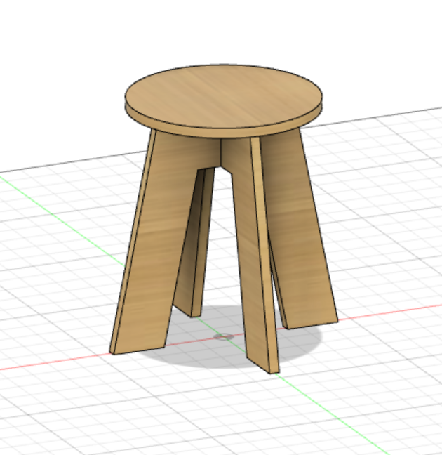
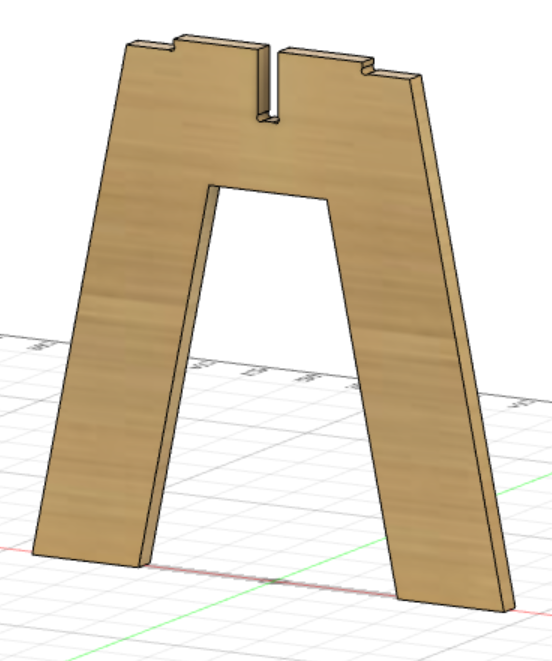
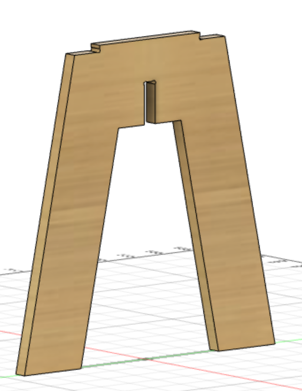
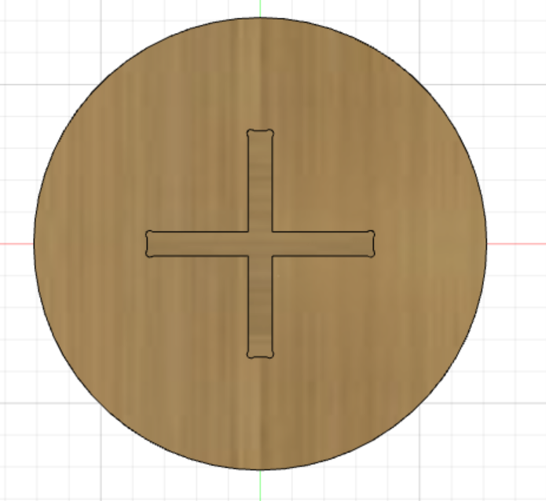
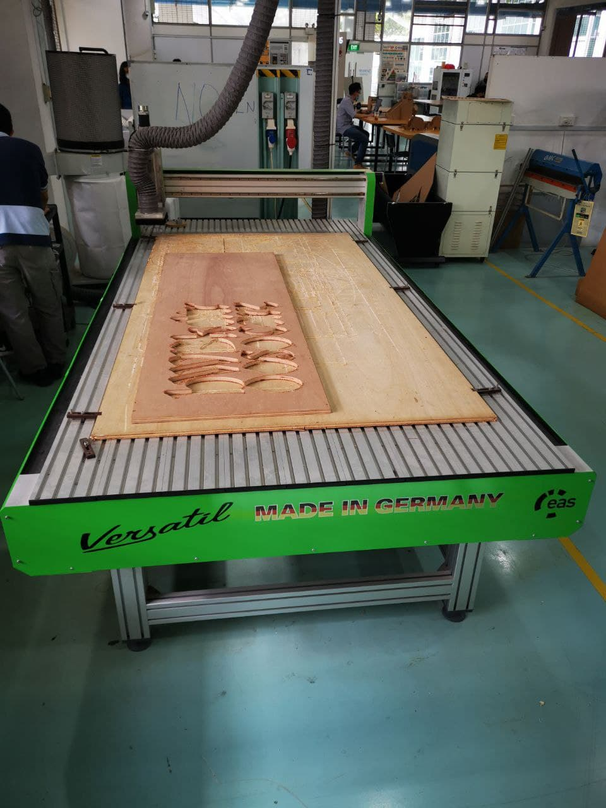
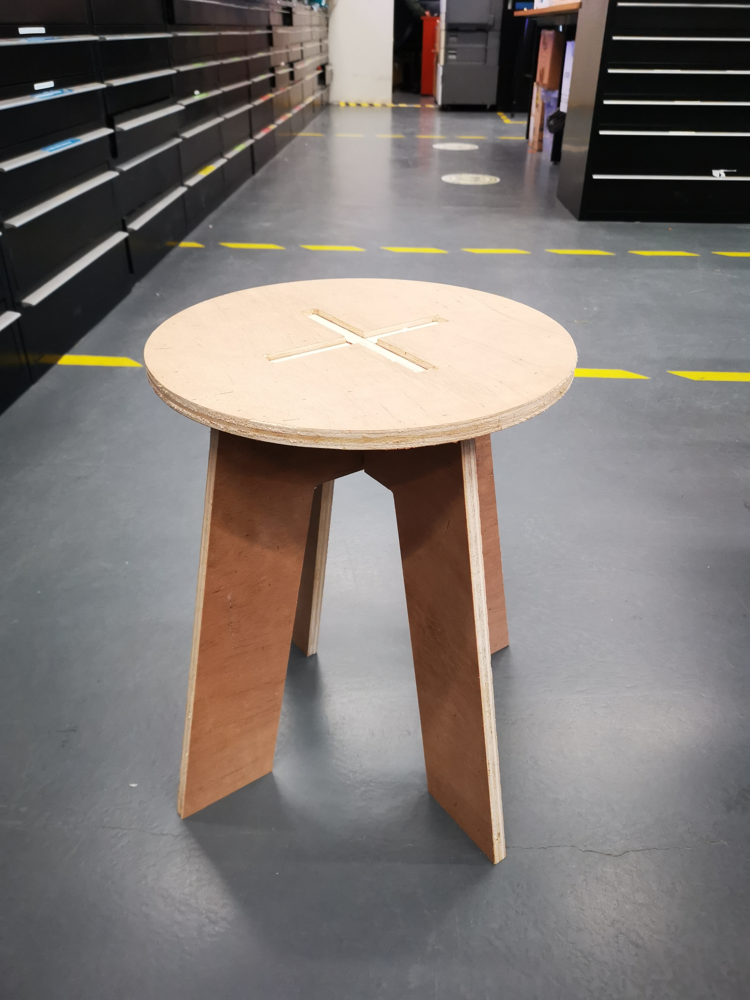
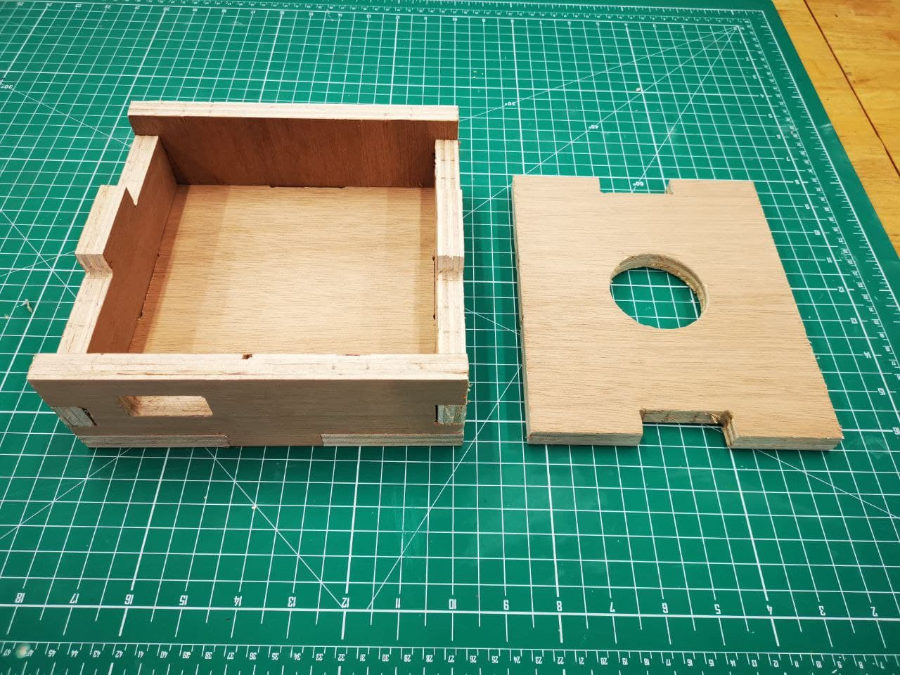

2D controlled cutting
In 2D controlled cutting, we use a computer numerical control (CNC) machine to cut out our design.
The dimensions for a given part are set into place with computer-aided design (CAD) software such as Fusion 360 which is then converted into an actual finished product with computer-aided manufacturing (CAM) software.
Based on our individual assignment, we had to create a CNC cut out that can be assembled and is rather big in size. Hence, here is the design of a stool i've created on fusion 360 with the aid of a video i found here.
The design is saved in .dxf format for cutting out the seat and the other two legs for assembly.
  With the help of Mr Steven to operate the CNC machine, i was able to do the milling for my stool design. Before operating the CNC machine, we have to set the x, y and z axis value through the use of a controller, we use a probe to set the z value. To make things easier when setting the z axis, make sure that the point of probing is nearby so the machine can set z axis easily and puts the user at ease. Once ready, turn on the vacuum to suck up the dust from the milling process and you are ready to mil your design.
When cutting, ensure that you wear proper PPEs such as ear muffs and googles for protection against noise and hazard of flying pieces of wood.
Here is the cutout of my Stool after milling. As you can see, there are many wood fibres around after the cutting, hence, i have to sand and smoothen out the surfaces.

Here is the finished product after sanding and smoothening the surface of the stool.

In addition to cutting my stool design for the individual assignment, i also did a CNC cutting of a casing for my final module project. After cutting and sanding away the rough surfaces, here is the final result.
That concludes the end of CNC cutting :)